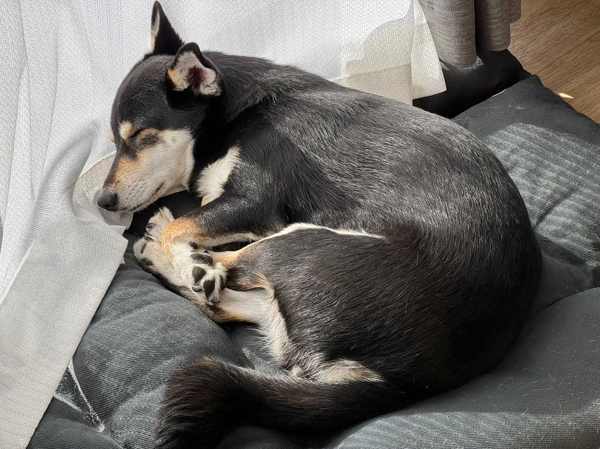

小野 遥 Haruka Ono

Research student, Biodiversity Conservation Planning Section,
National Institute for Environmental Studies (NIES), Japan
A member of Biodiversity conservation * Human behaviour change Team
moonoharuka (at) gmail.com
I’m interested in biodiversity conservation finance in private capital, such as the business sector!
The origin of my research lies in my realization, gained through the perspective of evolutionary ecology, of the tremendous diversity among living organisms that have evolved over vast periods, and the irreplaceability of each.
I'm conducting research with the aim of promoting societal investment in bearing the inherent costs of conserving biodiversity, which brings benefits to both society itself and the citizens who constitute it.
Love for... diversity, climbing, diving, design (graphic / user interface / marketing) and coffee
I’m an ally.
サイエンスイラストレーション・グラフィックレコーディング等のご依頼について
・ご依頼はTSUKIHI design名義でお請けします（適格請求書発行事業者登録済）。上記のメールアドレスからお気軽にご相談ください。
・大学、研究機関、企業を発注元としてご依頼いただく場合は、基本的に見積書・請求書での支払い手続きで対応いたします。
Publications
Peer-reviewed articles
- Hsu CH, Ono H and Kubo T (2026) Nature-Positive Tourism should prioritize biodiversity conservation. npj Biodiversity
- 小野遥、久保雄広 (2026) 生物多様性ファイナンスにおいて期待される解決策 -金融メカニズムの発展と実装課題-. 『環境経済・政策研究』, 19 (1), 39-44.
- Kanasugi N, Sawada A, Nakamura H, Kumagai S, Ono H, Esashi M, Nagai S, Murakami R, Shiraiwa S, Takagi M (2024) Do weather conditions during brood rearing period affect the survival of owl chicks in a subtropical island?. Ornithological Science, 23 (2), 65-76
- 寺田一貴、小野遥、大林花織、平早紀、佐藤弘人、朴炫貞 (2024) 五感を活用したオンラインサイエンスイベントにおける双方向コミュニケーションの実践 ～エネルギーを視聴覚で体感するコンテンツの有効性～. Japanese Journal of Science Communication, 34, 21-45
[English title] Approaches and practices for mutual communication in online science events using the senses: the effectiveness of audio-visual contents for feeling energy - Sawada A, Iwasaki T, Inoue C, Nakaoka K, Nakanishi T, Sawada J, Aso N, Nagai S, Ono H, Murakami R and Takagi M (2023) Estimation of condition dependent dispersal kernel with simple Bayesian regression analysis. Ornithological Science, 22, 25-34
- Murakami R, Sawada A, Ono H and Takagi M (2021) The effect of experience on parental role division in Ryukyu Scops Owl Otus elegans. Ornithological Science, 21, 35-44
- Sawada A, Iwasaki T, Inoue C, Nakaoka K, Nakanishi T, Sawada J, Aso N, Nagai S, Ono H and Takagi M (2021) Missing piece of top predator‐based conservation: Demographic analysis of an owl population on a remote subtropical island. Population Ecology, 63, 204-218
CV
Education / Career history
- 2015 - 2019: Division of Biology, Department of Biological Science, School of Science, Hokkaido University (B.S.)
- 2019 - 2021: Biodiversity Research Group, Department of Natural History Science, School of Science, Graduate School of Science, Hokkaido University (M.S)
- 2021 - 2022: Science Communicator Training Program Selective Course B (science event), CoSTEP, Hokkaido University
- 2021 - 2023: MTI Ltd., Tokyo
- 2023 - 2024: Assistant Staff, Biodiversity Conservation Planning Section, National Institute for Environmental Studies (NIES), Japan
- 2024 - 2025: Reserch Assistant, Biodiversity Conservation Planning Section, National Institute for Environmental Studies (NIES), Japan
- 2023 - Present: sole proprietorship as TSUKIHI design
- 2024 - Present: Graduate School of Agriculture, Hokkaido University (PhD)
- 2025 - Present: Research student, Biodiversity Conservation Planning Section, National Institute for Environmental Studies (NIES), Japan
- 2025 Feb - Mar: Visiting researcher, University of Canterbury, New Zealand
Grants
- 2019 - 2020: Bird Research Association, Research Support Project (Ono H)
- 2019 - 2020: Seven-Eleven Foundation, Environmental Civic Activity Grant (Sawada A & Ono H)
- 2019 - 2020: Tokyo Zoological Park Society Wildlife Conservation Fund (Sawada A, Murakami R, Ono H & Takagi M)
- 2024 - 2027: Sompo Environment Foundation, Academic Research Grant (Ono H)
- 2024 - 2027: JST SPRING (Ono H)
Presentation
- Ono H, Sawada A, Takagi M. Examination of territory establishment patterns of the Ryukyu Scops Owl on Minami-Daito Island. The Ornithological Society of Japan 2018 Annual Meeting
- Ono H, Sawada A, Takagi M. Can more aggressive Daito Scops Owls acquire better territories?. The Ecological Society of Japan 2018 Hokkaido Branch Meeting
- Ono H, Sawada A, Murakami R, Takagi M. How do successful breeding pairs deal with intruders? Relationship between territorial defense behavior and breeding success. The Ornithological Society of Japan 2019 Annual Meeting
- Sawada A, Ono H, Takagi M. Which comes first, sex differences in dispersal distance or inbreeding avoidance?. The 35th Annual Meeting of the Society of Population Ecology
- Ono H, Sawada A, Murakami R, Takagi M. How do successful breeding pairs deal with intruders? Relationship between territorial defense behavior and breeding success. The Ecological Society of Japan 2019 Hokkaido Branch Meeting
- Sawada A, ... (and 7 others) ..., Ono H, Takagi M. Female survival dictates the fate of the Ryukyu Scops Owl population on Minami-Daito Island. The Ornithological Society of Japan 2021 Annual Meeting
- Ono H, Sawada A, Murakami R, Takagi M. Verification of personality and its maintenance mechanisms in an isolated owl population. The 68th Annual Meeting of the Ecological Society of Japan
- Sawada A, ... (and 7 others) ..., Ono H, Murakami R, Takagi M. Estimation of the dispersal kernel of the Ryukyu Scops Owl by regression analysis using the Weibull distribution. The Ornithological Society of Japan 2022 Annual Meeting
- Ono H, Kubo T, Yamaguchi R. Voluntary financial contributions to biodiversity conservation by Japanese companies: An empirical analysis of the actual conditions and determinants using disclosed information. Society for Environmental Economics and Policy Studies 2025 Annual Meeting
- Ono H, Kubo T, Yamaguchi R. Corporate Biodiversity Funding in Practice: Patterns and Determinants under a Voluntary Disclosure System. The British Ecological Society Annual Meeting 2025
Outreach activities
- 2019: Ryukyu Scops Owl Lecture in Minami-daito Island, Okinawa, Japan
- 2020: “Understanding animal personality from Ryukyu Scops Owl”, Report Meeting on the Latest Topics in Birds, Hokkaido, Japan
学歴・職歴
- 2009 - 2015: 国立大学法人 奈良女子大学附属中等教育学校
- 2015 - 2019: 北海道大学理学部 生物科学科 生物学専修
- 2019 - 2021: 北海道大学大学院 理学院 自然史科学専攻（修士課程）
- 2021 - 2022: 北海道大学 CoSTEP 科学技術コミュニケーター養成プログラム 選科B 修了
- 2021 - 2023: 株式会社エムティーアイにてデジタルマーケティング業務に従事
- 2023 - 2024: 国立環境研究所 生物多様性領域 生物多様性保全計画研究室 アシスタントスタッフ
- 2024 - 2025: 国立環境研究所 生物多様性領域 生物多様性保全計画研究室 リサーチアシスタント
- 2023 - 現在: TSUKIHI designとしてデザイン業で開業
- 2024 - 現在: 北海道大学大学院 農学院 環境フロンティアコース（博士課程）
- 2025 - 現在: 国立環境研究所 生物多様性領域 生物多様性保全計画研究室 研究生
- 2025 2月 - 3月: カンタベリー大学（クライストチャーチ・ニュージーランド） 訪問研究員（学生）
研究助成
- 2019年度: 認定NPO法人バードリサーチ 調査研究支援プロジェクト（個人）
- 2019年度: 一般財団法人 セブン-イレブン記念財団法人 環境市民活動助成（分担）
- 2019年度: 公益財団法人 東京動物園協会 野生生物保全基金（分担）
- 2024〜2026年度: 公益財団法人 SOMPO環境財団 学術研究助成（個人）
- 2024〜2026年度: JST 次世代研究者挑戦的研究プログラム（個人）
学会発表
- 小野遥, 澤田明, 高木昌興. 南大東島のリュウキュウコノハズクのなわばり定着様式の検討. 日本鳥学会2018年度大会
- 小野遥, 澤田明, 高木昌興. 攻撃的なダイトウコノハズクほど、より良いなわばりをかまえられるか. 2018年度日本生態学会北海道地区大会
- 小野遥, 澤田明, 村上凌太, 高木昌興. 繁殖上手なつがいはどのように侵入者に対処する？：なわばり防衛行動と繁殖成績の関係. 日本鳥学会2019年度大会
- 澤田明, 小野遥, 高木昌興. 分散距離の性差が先か？近親交配の回避が先か？. 第35回個体群生態学会大会
- 小野遥, 澤田明, 村上凌太, 高木昌興. 繁殖上手なつがいはどのように侵入者に対処する？：なわばり防衛行動と繁殖成績の関係. 2019年度日本生態学会北海道地区大会
- 澤田明, …（他7名）…, 小野遥, 高木昌興. メスの生存が南大東島のリュウキュウコノハズク個体群の運命を左右する. 日本鳥学会2021年度大会
- 小野遥, 澤田明, 村上凌太, 高木昌興. フクロウの隔離個体群における個性およびその維持機構の検証. 第68回日本生態学会大会
- 澤田明, …（他7 名）…, 小野遥, 村上凌太, 高木昌興. ワイブル分布を用いた回帰分析によるリュウキュウコノハズクの分散カーネルの推定. 日本鳥学会2022 年度大会
- 小野遥, 久保雄広, 山口臨太郎. 日本企業による生物多様性保全への自主的な資金拠出： 開示情報を用いた実態と決定要因の実証分析. 環境経済・政策学会2025年⼤会
- Ono H, Kubo T, Yamaguchi R. Corporate Biodiversity Funding in Practice: Patterns and Determinants under a Voluntary Disclosure System. The British Ecological Society Annual Meeting 2025